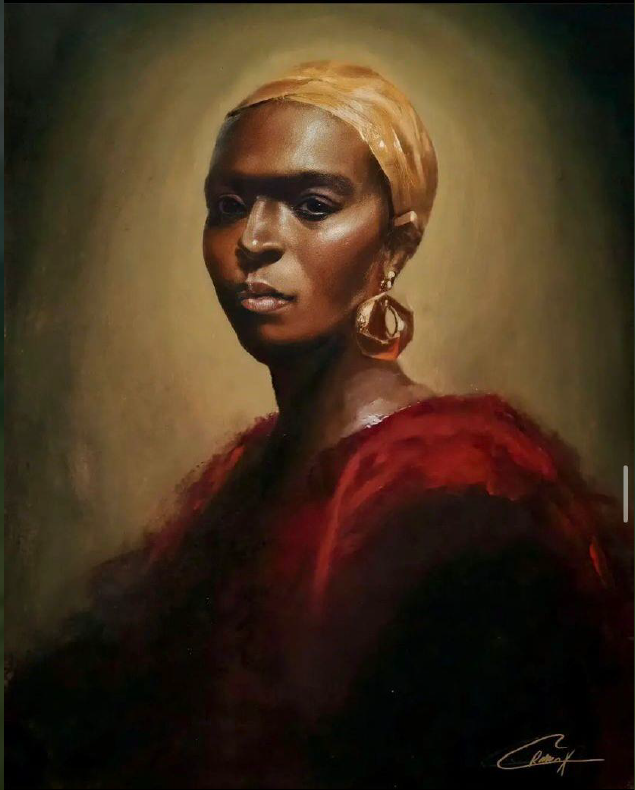
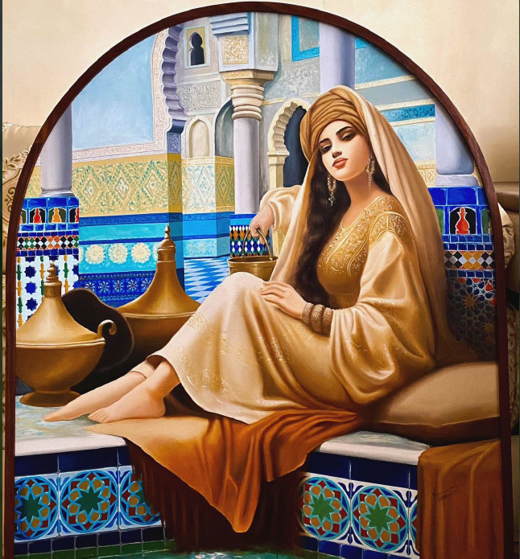
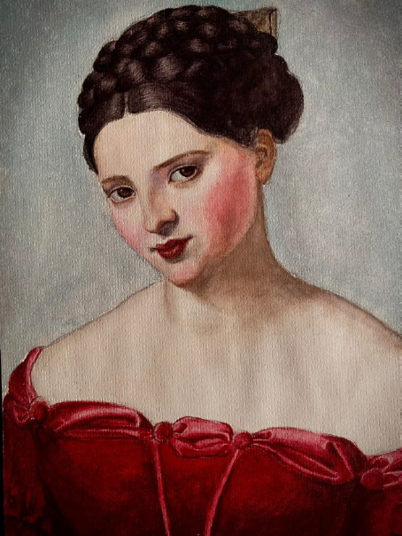
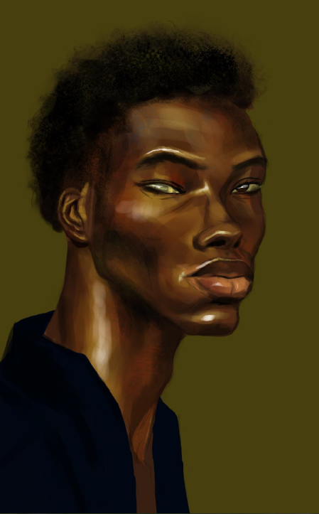

I saw home in you,not a place, not a shelter, just you.
You made me laugh in ways that made life feel bearable again.
You were complex and I loved every layer, even the ones that cut.
Your eyes always told me more than your words ever could.
You were fire, wild, bold, hard to hold, but I wanted to hold you anyway.
Your hands were so soft that just a touch against my cheek could silence the world and dissolve all my worries
You were peace too, in the quiet, in your voice, in late nights and soft moments.
You never faked what you felt, even when it hurt and I respected that.
You're beautiful. Just like that.Gorgeous.
I saw the girl behind your walls and I stayed.
I saw you trying, even when it didn't come out perfect.
I know your mind runs too fast sometimes but only because you care.
I never judged the parts you tried to hide.
Your love was messy but real and I felt it.
You've always been someone special to me. You've always been my person.
You didn't always believe in yourself, but I always believed in you.
You made me want to be better, even in silence.
You reminded me of a song I couldn't stop replaying.
And if you ever knock on my heart again… I'd still open the door, no hesitation.

I Love how the gold headwrap just pops against that warm background. Her expression is so strong and beautiful.

This is like something out of a fairy tale! All those gorgeous tiles and the way she's lounging there,it's so dreamy and luxurious. It looks like you in an old Riyad

She's absolutely lovely. She kinda looks like you too. The soft lighting on her skin is perfect, and that red dress is stunning. There's something really sweet about her expression. Maybe it's the eyes that remind me of yours
This one is so underrated. So moody and dramatic! The way her hair flows is amazing, and you really captured something powerful here

This one... Oh god, this one is amazing! The golden light is incredible, and the bone structure and clear, smooth skin are beautiful. Also, the messed up right eye is such a crazy detail.I would definitely get this one framed and hung on my wall.